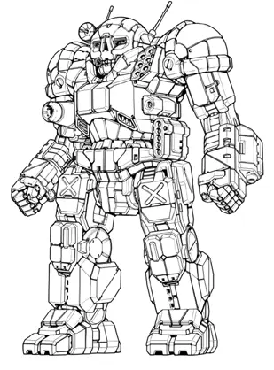
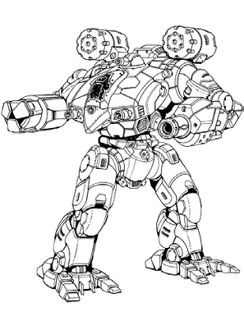
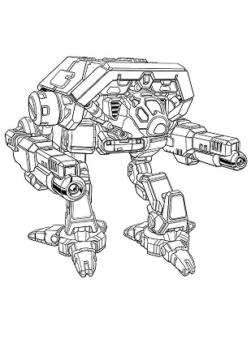

Characters¶
Mercenary’s Pride has the following cast of characters.
Bennet’s Badgers¶
Bennet’s Badgers is a small, struggling mercenary company.
Jane Bennet

Mech: Marauder C
Sarna: Marauder article
Piloting: 4
Gunnery: 4
BV: 1.882
PV: 36
Elizabeth Bennet
{kind=link}
Mech: Atlas C 2
Sarna: Atlas article
Piloting: 5
Gunnery: 3
BV: 3.283
PV: 57
Mary Bennet

Mech: Catapult CPLT-C5A
Sarna: Catapult article
Piloting: 5
Gunnery: 4
BV: 1.772
PV: 41
Catherine Bennet

Mech: Griffin IIC 2
Sarna: Griffin IIC article
Piloting: 5
Gunnery: 4
BV: 1.516
PV: 30
Lydia Bennet

Mech: Shadow Hawk IIC 3
Sarna: Shadow Hawk IIC article
Piloting: 5
Gunnery: 4
BV: 1.471
PV: 33
Snow Ravens¶
Expeditionary Star Alpha is a Snow Raven star on special assignment.
Star Captain Fitzwilliam Darcy
{kind=link}
Mech: War Crow B
Sarna: War Crow article
Piloting: 5
Gunnery: 3
BV: 3.344
PV: 53
Star Commander Charles Bingley

Mech: Crossbow G
Sarna: Crossbow article
Piloting: 4
Gunnery: 4
BV: 1.898
PV: 38
Caroline

Mech: Pouncer I
Sarna: Pouncer article
Piloting: 5
Gunnery: 4
BV: 1.781
PV: 31
Louisa
{kind=link}
Mech: Adder I
Sarna: Adder article
Piloting: 5
Gunnery: 4
BV: 1.575
PV: 36
Philip

Mech: Mist Lynx C
Sarna: Mist Lynx article
Piloting: 5
Gunnery: 4
BV: 1.320
PV: 29
Other Characters¶
Supervisor George Wickham

Mech: BattleMaster BLG-1G
Sarna: BattleMaster article
Piloting: 6
Gunnery: 3
BV: 1.762
PV: 40
Capt Gardner

Mech: Merlin MLN-1C
Sarna: Merlin article
Piloting: 5
Gunnery: 4
BV: 1.267
PV: 31
Lt Gardner
Mech: Merlin MLN-1D
Sarna: Merlin article
Piloting: 5
Gunnery: 4
BV: 1.370
PV: 34